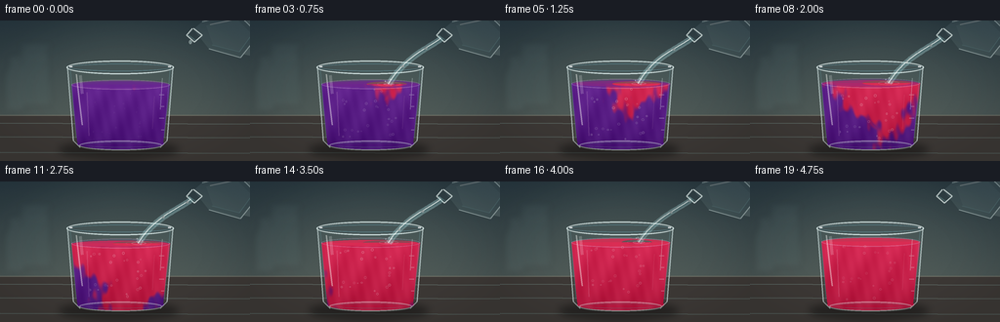
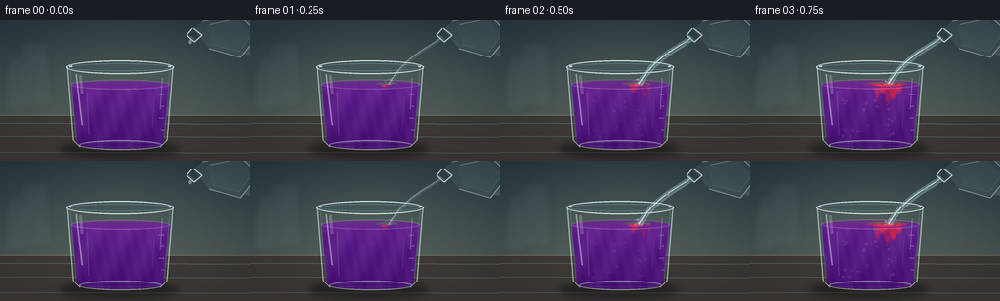

CODING AGENTS AS PIXEL WORLD MODELS
traex/GPT-5.6-Sol · phygen_146
点击播放 · 原生 RGB 像素
逐轮保存的候选
回放视频、检查图与代码变化。
每份候选均可单独播放。实际图片检查记录在下方工具轨迹中。
候选 01播放与检查图
点击播放 · 原生 RGB 像素


展开代码变化
--- 上一保存版本
+++ 本次保存版本
@@ -0,0 +1,315 @@
+from pathlib import Path
+import math
+import numpy as np
+from PIL import Image, ImageDraw, ImageFilter
+import artifact_io
+
+# PixelWorld: procedural, deterministic text-to-video rendering.
+W, H, N = 256, 144, 20
+S = 4
+WW, HH = W*S, H*S
+rng = np.random.default_rng(146)
+
+
+def rgba_layer():
+ return Image.new("RGBA", (WW, HH), (0, 0, 0, 0))
+
+
+def sc(v):
+ if isinstance(v, (tuple, list)):
+ return tuple(int(round(x*S)) for x in v)
+ return int(round(v*S))
+
+
+def line(draw, pts, fill, width=1, joint="curve"):
+ draw.line([sc(p) for p in pts], fill=fill, width=max(1, sc(width)), joint=joint)
+
+
+def ellipse(draw, box, fill=None, outline=None, width=1):
+ draw.ellipse(sc(box), fill=fill, outline=outline, width=max(1, sc(width)))
+
+
+def polygon(draw, pts, fill=None, outline=None):
+ draw.polygon([sc(p) for p in pts], fill=fill, outline=outline)
+
+
+def bezier(p0, p1, p2, p3, count=30):
+ a = np.linspace(0, 1, count)
+ one = 1-a
+ x = one**3*p0[0] + 3*one**2*a*p1[0] + 3*one*a**2*p2[0] + a**3*p3[0]
+ y = one**3*p0[1] + 3*one**2*a*p1[1] + 3*one*a**2*p2[1] + a**3*p3[1]
+ return list(zip(x, y))
+
+
+def smoothstep(x):
+ x = np.clip(x, 0.0, 1.0)
+ return x*x*(3-2*x)
+
+
+def make_background():
+ yy, xx = np.mgrid[0:HH, 0:WW]
+ # Cool, softly illuminated laboratory wall.
+ top = np.array([36., 53., 62.])
+ bot = np.array([72., 84., 83.])
+ q = np.clip(yy/(104*S), 0, 1)[..., None]
+ arr = top*(1-q) + bot*q
+ warm = np.exp(-(((xx-125*S)/(115*S))**2 + ((yy-52*S)/(80*S))**2))[..., None]
+ arr += warm*np.array([15., 13., 8.])
+ # very restrained photographic grain
+ grain = rng.normal(0, 0.85, (HH, WW, 1))
+ arr += grain
+ arr = np.clip(arr, 0, 255).astype(np.uint8)
+ base = Image.fromarray(arr, "RGB").convert("RGBA")
+
+ # Defocused lab glassware and a rack in the rear.
+ far = rgba_layer(); d = ImageDraw.Draw(far)
+ ellipse(d, (17, 22, 55, 28), fill=(125, 160, 160, 22))
+ polygon(d, [(22,25),(19,88),(53,88),(49,25)], fill=(133,169,168,15), outline=(178,204,199,22))
+ for x in (28,38,48):
+ polygon(d, [(x,38),(x-3,80),(x+5,80),(x+2,38)], fill=(102,145,146,20))
+ ellipse(d, (x-1,35,x+3,40), outline=(184,211,205,28), width=1)
+ # blurry reagent bottle left
+ polygon(d, [(4,55),(8,47),(8,35),(20,35),(20,47),(25,55),(25,94),(4,94)], fill=(116,142,143,24))
+ far = far.filter(ImageFilter.GaussianBlur(sc(3.2)))
+ base = Image.alpha_composite(base, far)
+
+ # Worktop with edge line and soft central glow.
+ bench = rgba_layer(); d = ImageDraw.Draw(bench)
+ polygon(d, [(0,97),(256,97),(256,144),(0,144)], fill=(60,56,53,255))
+ line(d, [(0,97),(256,97)], (150,138,119,100), 1)
+ # subtle brushed surface lines
+ for y, alpha in [(105,18),(119,15),(135,12)]:
+ line(d, [(0,y),(256,y+1)], (205,182,151,alpha), 1)
+ base = Image.alpha_composite(base, bench)
+ return base
+
+
+BACKGROUND = make_background()
+
+# Fixed bubble seeds: x-normalized, y-normalized, radius, phase.
+bubbles = [(rng.uniform(-0.82,0.82), rng.uniform(0.06,0.96), rng.uniform(.55,1.45), rng.uniform(0,1)) for _ in range(25)]
+
+
+def liquid_image(frame, surface_y, progress):
+ """Render the indicator body and its evolving acid concentration field."""
+ yy, xx = np.mgrid[0:HH, 0:WW]
+ X, Y = xx/S, yy/S
+ center = 123.5
+ yn = np.clip((Y-surface_y)/(126-surface_y), 0, 1)
+ halfwidth = 49 - 4.7*yn
+ xn = (X-center)/np.maximum(halfwidth, 1)
+
+ # Vinegar enters just right of center. The reaction front descends in
+ # curling filaments before lateral diffusion completes the transition.
+ u = progress
+ curl = 0.24*np.sin(yn*7.8 + u*5.2) + 0.075*np.sin(yn*18.0-u*8.0)
+ impact_x = 0.28
+ path = impact_x + curl*(0.25 + 0.75*yn)
+ waviness = 0.035*np.sin(X*.34 + Y*.21 + frame*.43) + 0.022*np.sin(X*.73-Y*.19)
+ arrival = 0.025 + 0.39*yn + 0.33*np.abs(xn-path) + waviness
+ acid = smoothstep((u-arrival+0.055)/0.115)
+
+ # Thin sinking crimson tendrils make the mixing physically legible.
+ reached = smoothstep((u - 0.06 - 0.36*yn)/0.14)
+ filament1 = np.exp(-((xn-path)/(.055+.035*yn))**2) * reached
+ path2 = impact_x - .22*np.sin(yn*10.5+1.2) - .10*yn
+ filament2 = np.exp(-((xn-path2)/(.045+.03*yn))**2) * reached * smoothstep((u-.16)/.25)
+ acid = np.maximum(acid, .84*filament1)
+ acid = np.maximum(acid, .58*filament2)
+ # Late-stage bulk diffusion ensures the final shot is unequivocally red.
+ acid = 1-(1-acid)*(1-0.92*smoothstep((u-.62)/.40))
+ acid = np.clip(acid, 0, 1)
+
+ # Rich litmus purple -> acidic rose-red, with depth absorption.
+ purple = np.zeros((HH,WW,3), dtype=float)
+ red = np.zeros_like(purple)
+ purple[:] = [91, 31, 132]
+ red[:] = [205, 35, 72]
+ depth = yn[...,None]
+ purple -= depth*np.array([17,12,14])
+ red -= depth*np.array([24,12,10])
+ col = purple*(1-acid[...,None]) + red*acid[...,None]
+ # caustic highlights and mild fluid texture
+ caustic = 5*np.sin(X*.20 + Y*.10 + frame*.17) + 2.5*np.sin(X*.61-Y*.13)
+ col += caustic[...,None]
+ col += (1-yn[...,None])*np.array([8.,5.,11.])
+ col = np.clip(col,0,255).astype(np.uint8)
+ img = Image.fromarray(col, "RGB").convert("RGBA")
+
+ # Interior of the slightly tapered beaker.
+ mask = Image.new("L", (WW,HH), 0); m = ImageDraw.Draw(mask)
+ polygon(m, [(73,surface_y),(174,surface_y),(167,124),(161,129),(85,129),(79,124)], fill=255)
+ ellipse(m, (79,120,168,132), fill=255)
+ img.putalpha(mask)
+ return img, acid
+
+
+def render(frame):
+ im = BACKGROUND.copy()
+ # progress begins only once the pour makes contact.
+ progress = np.clip((frame-0.6)/18.0, 0, 1.04)
+ surface_y = 65.5 - 3.8*progress
+
+ # Contact shadow anchors the glass to the worktop.
+ shadow = rgba_layer(); d = ImageDraw.Draw(shadow)
+ ellipse(d, (60,124,183,141), fill=(6,8,9,125))
+ ellipse(d, (75,128,170,137), fill=(0,0,0,90))
+ shadow = shadow.filter(ImageFilter.GaussianBlur(sc(4.0)))
+ im = Image.alpha_composite(im, shadow)
+
+ # Transparent empty glass body and back rim, visible above liquid.
+ glassback = rgba_layer(); d = ImageDraw.Draw(glassback)
+ polygon(d, [(69,47),(75,123),(81,130),(164,130),(171,123),(177,47)], fill=(155,202,208,12))
+ ellipse(d, (68,41,178,55), fill=(131,190,199,10), outline=(216,239,239,120), width=1)
+ ellipse(d, (71,44,175,52), outline=(108,151,161,90), width=1)
+ im = Image.alpha_composite(im, glassback)
+
+ liquid, acid = liquid_image(frame, surface_y, progress)
+ im = Image.alpha_composite(im, liquid)
+
+ # Liquid top surface. Its center changes first, retaining a purple fringe.
+ surf = rgba_layer(); d = ImageDraw.Draw(surf)
+ mean_acid = smoothstep((progress-.03)/.72)
+ pc = np.array([104,38,145]); rc = np.array([218,45,83])
+ c = (pc*(1-mean_acid)+rc*mean_acid).astype(int)
+ ellipse(d, (73,surface_y-4.8,174,surface_y+5.2), fill=tuple(c)+(225,), outline=(229,183,224,75), width=1)
+ # Purple perimeter remains during early mixing, enhancing depth.
+ if progress < .78:
+ ring_alpha = int(155*(1-progress/.78))
+ ellipse(d, (74,surface_y-4.1,173,surface_y+4.3), outline=(117,46,155,ring_alpha), width=1.2)
+ # red impact pool
+ pool = smoothstep((progress-.01)/.20)*(1-smoothstep((progress-.72)/.22))
+ if pool > 0:
+ ellipse(d, (129-14*pool,surface_y-2.4,151+14*pool,surface_y+2.6), fill=(220,44,79,int(120*pool)))
+ im = Image.alpha_composite(im, surf)
+
+ # Bubbles and suspended highlights, clipped by a beaker-liquid mask.
+ details = rgba_layer(); d = ImageDraw.Draw(details)
+ liquid_mask = Image.new("L", (WW,HH), 0); md = ImageDraw.Draw(liquid_mask)
+ polygon(md, [(74,surface_y),(173,surface_y),(167,125),(162,130),(84,130),(79,125)], fill=255)
+ bubble_strength = smoothstep(progress/.22)*(1-.45*smoothstep((progress-.72)/.28))
+ for bx, by, r, phase in bubbles:
+ # buoyant motion cycles upward; fixed random phases avoid flicker.
+ yv = (by - progress*(.22+.09*phase)) % .92
+ x = 123 + bx*(43-3*yv) + 2.0*math.sin(frame*.35+phase*12+by*5)
+ y = surface_y + 4 + yv*(122-surface_y)
+ a = int((35+45*phase)*bubble_strength)
+ ellipse(d, (x-r,y-r,x+r,y+r), fill=(229,239,241,8), outline=(244,247,245,a), width=.45)
+ # soft vertical caustics inside
+ line(d, [(89,surface_y+8),(91,118)], (255,221,238,32), 1.2)
+ line(d, [(158,surface_y+12),(156,111)], (255,223,228,20), .8)
+ details.putalpha(Image.composite(details.getchannel('A'), Image.new('L',(WW,HH),0), liquid_mask))
+ im = Image.alpha_composite(im, details)
+
+ # Foreground glass reflections, base thickness, rim and calibration marks.
+ glass = rgba_layer(); d = ImageDraw.Draw(glass)
+ # side walls: layered strokes suggest thick glass
+ line(d, [(69,47),(75,123),(82,130)], (224,242,241,150), 1.35)
+ line(d, [(177,47),(171,123),(164,130)], (224,242,241,150), 1.35)
+ line(d, [(72,51),(78,120)], (110,161,168,88), .7)
+ line(d, [(174,51),(168,120)], (110,161,168,88), .7)
+ # broad curved reflections
+ line(d, [(78,55),(81,82),(84,107)], (255,255,250,105), 1.6)
+ line(d, [(82,56),(84,75)], (255,255,255,48), 3.0)
+ line(d, [(166,59),(164,91)], (226,247,245,65), 1.0)
+ # base ellipses
+ ellipse(d, (81,123,166,133), outline=(225,239,236,125), width=1.2)
+ ellipse(d, (84,125,163,130), outline=(92,130,135,70), width=.7)
+ # rim on top of fluid and stream
+ ellipse(d, (68,41,178,55), outline=(232,247,245,180), width=1.2)
+ ellipse(d, (71,44,175,52), outline=(92,135,145,120), width=.75)
+ line(d, [(71,47),(74,47)], (255,255,255,200), 1.5)
+ line(d, [(172,47),(175,47)], (255,255,255,185), 1.5)
+ # graduation ticks on right wall
+ for i, ytick in enumerate((76,88,100,112)):
+ length = 5 if i%2==0 else 3
+ line(d, [(168-length,ytick),(168,ytick)], (225,239,236,95), .65)
+ im = Image.alpha_composite(im, glass)
+
+ # Clear vinegar source: a tilted, transparent laboratory beaker entering top-right.
+ source = rgba_layer(); d = ImageDraw.Draw(source)
+ # a restrained hand/glove behind the source
+ polygon(d, [(244,0),(256,0),(256,36),(247,34),(239,21)], fill=(185,204,200,44))
+ # vessel shell
+ polygon(d, [(198,9),(207,1),(243,-7),(265,14),(246,38),(214,29)], fill=(185,225,226,22))
+ # clear liquid seen inside (blue-gray only from reflection)
+ polygon(d, [(211,5),(241,-3),(258,14),(245,32),(218,25)], fill=(181,218,215,32))
+ line(d, [(207,1),(243,-7),(265,14),(246,38),(214,29)], (228,246,243,125), 1.1)
+ line(d, [(217,25),(245,32),(258,14)], (133,182,183,75), .8)
+ # mouth lip, aimed down-left
+ line(d, [(197,8),(191,15),(199,22),(207,15),(198,8)], (237,250,247,190), 1.25)
+ line(d, [(193,15),(200,20)], (112,162,165,110), .7)
+ line(d, [(215,4),(244,-2)], (255,255,250,95), 1.0)
+ im = Image.alpha_composite(im, source)
+
+ # Pouring stream. It is nearly colorless: only highlights and refraction show it.
+ # It runs most of the timelapse, tapering naturally at either end.
+ if frame == 0:
+ intensity = 0.0
+ elif frame == 1:
+ intensity = .48
+ elif frame <= 15:
+ intensity = 1.0
+ elif frame == 16:
+ intensity = .86
+ elif frame == 17:
+ intensity = .60
+ elif frame == 18:
+ intensity = .30
+ else:
+ intensity = 0.0
+ if intensity > 0:
+ stream = rgba_layer(); d = ImageDraw.Draw(stream)
+ wobble = 1.1*math.sin(frame*.91)
+ pts = bezier((196,18),(186,27),(160+wobble,35),(142+wobble*.25,surface_y),34)
+ # refracted outer body and white edge; no tint that could read as colored vinegar
+ line(d, pts, (172,220,222,int(90*intensity)), 5.2*intensity+1.0)
+ line(d, [(x-.8,y) for x,y in pts], (242,252,248,int(200*intensity)), 1.05)
+ line(d, [(x+1.15,y) for x,y in pts], (91,155,163,int(95*intensity)), .75)
+ # A few glints travel down the stream.
+ for k in range(2):
+ q = ((frame*.23+k*.43) % .82)+.08
+ idx = min(len(pts)-1, int(q*(len(pts)-1)))
+ x,y = pts[idx]
+ ellipse(d, (x-1.4,y-1.0,x+1.4,y+1.0), fill=(248,255,252,int(115*intensity)))
+ im = Image.alpha_composite(im, stream)
+
+ # Concentric impact ripples and tiny clear splashes.
+ ripple = rgba_layer(); d = ImageDraw.Draw(ripple)
+ phase = (frame*.58) % 1.0
+ for j in range(2):
+ r = 3.0 + ((phase+j*.47)%1)*12
+ a = int(100*(1-((phase+j*.47)%1))*intensity)
+ ellipse(d, (142-r,surface_y-r*.19,142+r,surface_y+r*.19), outline=(248,223,232,a), width=.65)
+ for j in range(3):
+ ang = frame*.9+j*2.1
+ x = 142 + math.sin(ang)*3.5
+ y = surface_y-2.5-abs(math.cos(ang))*2.7
+ ellipse(d, (x-.65,y-.65,x+.65,y+.65), fill=(236,249,246,int(115*intensity)))
+ im = Image.alpha_composite(im, ripple)
+ elif frame == 0:
+ # First isolated vinegar drop previews the pour.
+ drop = rgba_layer(); d = ImageDraw.Draw(drop)
+ ellipse(d, (193.5,20,196.3,24), fill=(205,237,235,100), outline=(246,253,249,155), width=.55)
+ im = Image.alpha_composite(im, drop)
+
+ # Gentle lens vignette and tabletop foreground sheen.
+ yy, xx = np.mgrid[0:HH,0:WW]
+ nx=(xx-WW/2)/(WW/2); ny=(yy-HH/2)/(HH/2)
+ vig=np.clip((nx*nx+ny*ny-.30)*24,0,25).astype(np.uint8)
+ va=np.zeros((HH,WW,4),dtype=np.uint8); va[...,3]=vig
+ im=Image.alpha_composite(im,Image.fromarray(va,'RGBA'))
+
+ # Downsample once for clean optical antialiasing.
+ im = im.convert("RGB").resize((W,H), Image.Resampling.LANCZOS)
+ return np.asarray(im, dtype=np.uint8)
+
+
+def main():
+ frames = np.stack([render(i) for i in range(N)], axis=0)
+ artifact_io.save(frames, Path(__file__).resolve().parent)
+ print(f"saved {frames.shape} {frames.dtype}; first/last mean: {frames[0].mean():.1f}/{frames[-1].mean():.1f}")
+
+
+if __name__ == "__main__":
+ main()
可观测工具轨迹
实际执行的命令与返回图片。
命令 1exit 0
/bin/bash -lc "ls -la && printf '\\n--- prompt.txt ---\\n' && cat prompt.txt"
命令 2exit 0
/bin/bash -lc "printf '%s\\n' '--- GENERATION_RULES.md ---' && cat GENERATION_RULES.md && printf '%s\\n' '--- task_spec.json ---' && cat task_spec.json"
命令 3exit 0
/bin/bash -lc "find . -maxdepth 2 -type f -printf '%p\\n' | sort"
命令 4exit 0
/bin/bash -lc "sed -n '1,260p' artifact_io.py"
命令 5exit 0
/bin/bash -lc "python - <<'PY' import importlib.util mods=['numpy','PIL','cv2','imageio','scipy'] for m in mods: print(m, bool(importlib.util.find_spec(m))) PY ffmpeg -version | head -n 2 || true"
命令 6exit 0
/bin/bash -lc "cat > generate.py <<'PY'
from pathlib import Path
import math
import numpy as np
from PIL import Image, ImageDraw, ImageFilter
import artifact_io
# PixelWorld: procedural, deterministic text-to-video rendering.
W, H, N = 256, 144, 20
S = 4
WW, HH = W*S, H*S
rng = np.random.default_rng(146)
def rgba_layer():
return Image.new(\"RGBA\", (WW, HH), (0, 0, 0, 0))
def sc(v):
if isinstance(v, (tuple, list)):
return tuple(int(round(x*S)) for x in v)
return int(round(v*S))
def line(draw, pts, fill, width=1, joint=\"curve\"):
draw.line([sc(p) for p in pts], fill=fill, width=max(1, sc(width)), joint=joint)
def ellipse(draw, box, fill=None, outline=None, width=1):
draw.ellipse(sc(box), fill=fill, outline=outline, width=max(1, sc(width)))
def polygon(draw, pts, fill=None, outline=None):
draw.polygon([sc(p) for p in pts], fill=fill, outline=outline)
def bezier(p0, p1, p2, p3, count=30):
a = np.linspace(0, 1, count)
one = 1-a
x = one**3*p0[0] + 3*one**2*a*p1[0] + 3*one*a**2*p2[0] + a**3*p3[0]
y = one**3*p0[1] + 3*one**2*a*p1[1] + 3*one*a**2*p2[1] + a**3*p3[1]
return list(zip(x, y))
def smoothstep(x):
x = np.clip(x, 0.0, 1.0)
return x*x*(3-2*x)
def make_background():
yy, xx = np.mgrid[0:HH, 0:WW]
# Cool, softly illuminated laboratory wall.
top = np.array([36., 53., 62.])
bot = np.array([72., 84., 83.])
q = np.clip(yy/(104*S), 0, 1)[..., None]
arr = top*(1-q) + bot*q
warm = np.exp(-(((xx-125*S)/(115*S))**2 + ((yy-52*S)/(80*S))**2))[..., None]
arr += warm*np.array([15., 13., 8.])
# very restrained photographic grain
grain = rng.normal(0, 0.85, (HH, WW, 1))
arr += grain
arr = np.clip(arr, 0, 255).astype(np.uint8)
base = Image.fromarray(arr, \"RGB\").convert(\"RGBA\")
# Defocused lab glassware and a rack in the rear.
far = rgba_layer(); d = ImageDraw.Draw(far)
ellipse(d, (17, 22, 55, 28), fill=(125, 160, 160, 22))
polygon(d, [(22,25),(19,88),(53,88),(49,25)], fill=(133,169,168,15), outline=(178,204,199,22))
for x in (28,38,48):
polygon(d, [(x,38),(x-3,80),(x+5,80),(x+2,38)], fill=(102,145,146,20))
ellipse(d, (x-1,35,x+3,40), outline=(184,211,205,28), width=1)
# blurry reagent bottle left
polygon(d, [(4,55),(8,47),(8,35),(20,35),(20,47),(25,55),(25,94),(4,94)], fill=(116,142,143,24))
far = far.filter(ImageFilter.GaussianBlur(sc(3.2)))
base = Image.alpha_composite(base, far)
# Worktop with edge line and soft central glow.
bench = rgba_layer(); d = ImageDraw.Draw(bench)
polygon(d, [(0,97),(256,97),(256,144),(0,144)], fill=(60,56,53,255))
line(d, [(0,97),(256,97)], (150,138,119,100), 1)
# subtle brushed surface lines
for y, alpha in [(105,18),(119,15),(135,12)]:
line(d, [(0,y),(256,y+1)], (205,182,151,alpha), 1)
base = Image.alpha_composite(base, bench)
return base
BACKGROUND = make_background()
# Fixed bubble seeds: x-normalized, y-normalized, radius, phase.
bubbles = [(rng.uniform(-0.82,0.82), rng.uniform(0.06,0.96), rng.uniform(.55,1.45), rng.uniform(0,1)) for _ in range(25)]
def liquid_image(frame, surface_y, progress):
\"\"\"Render the indicator body and its evolving acid concentration field.\"\"\"
yy, xx = np.mgrid[0:HH, 0:WW]
X, Y = xx/S, yy/S
center = 123.5
yn = np.clip((Y-surface_y)/(126-surface_y), 0, 1)
halfwidth = 49 - 4.7*yn
xn = (X-center)/np.maximum(halfwidth, 1)
# Vinegar enters just right of center. The reaction front descends in
# curling filaments before lateral diffusion completes the transition.
u = progress
curl = 0.24*np.sin(yn*7.8 + u*5.2) + 0.075*np.sin(yn*18.0-u*8.0)
impact_x = 0.28
path = impact_x + curl*(0.25 + 0.75*yn)
waviness = 0.035*np.sin(X*.34 + Y*.21 + frame*.43) + 0.022*np.sin(X*.73-Y*.19)
arrival = 0.025 + 0.39*yn + 0.33*np.abs(xn-path) + waviness
acid = smoothstep((u-arrival+0.055)/0.115)
# Thin sinking crimson tendrils make the mixing physically legible.
reached = smoothstep((u - 0.06 - 0.36*yn)/0.14)
filament1 = np.exp(-((xn-path)/(.055+.035*yn))**2) * reached
path2 = impact_x - .22*np.sin(yn*10.5+1.2) - .10*yn
filament2 = np.exp(-((xn-path2)/(.045+.03*yn))**2) * reached * smoothstep((u-.16)/.25)
acid = np.maximum(acid, .84*filament1)
acid = np.maximum(acid, .58*filament2)
# Late-stage bulk diffusion ensures the final shot is unequivocally red.
acid = 1-(1-acid)*(1-0.92*smoothstep((u-.62)/.40))
acid = np.clip(acid, 0, 1)
# Rich litmus purple -> acidic rose-red, with depth absorption.
purple = np.zeros((HH,WW,3), dtype=float)
red = np.zeros_like(purple)
purple[:] = [91, 31, 132]
red[:] = [205, 35, 72]
depth = yn[...,None]
purple -= depth*np.array([17,12,14])
red -= depth*np.array([24,12,10])
col = purple*(1-acid[...,None]) + red*acid[...,None]
# caustic highlights and mild fluid texture
caustic = 5*np.sin(X*.20 + Y*.10 + frame*.17) + 2.5*np.sin(X*.61-Y*.13)
col += caustic[...,None]
col += (1-yn[...,None])*np.array([8.,5.,11.])
col = np.clip(col,0,255).astype(np.uint8)
img = Image.fromarray(col, \"RGB\").convert(\"RGBA\")
# Interior of the slightly tapered beaker.
mask = Image.new(\"L\", (WW,HH), 0); m = ImageDraw.Draw(mask)
polygon(m, [(73,surface_y),(174,surface_y),(167,124),(161,129),(85,129),(79,124)], fill=255)
ellipse(m, (79,120,168,132), fill=255)
img.putalpha(mask)
return img, acid
def render(frame):
im = BACKGROUND.copy()
# progress begins only once the pour makes contact.
progress = np.clip((frame-0.6)/18.0, 0, 1.04)
surface_y = 65.5 - 3.8*progress
# Contact shadow anchors the glass to the worktop.
shadow = rgba_layer(); d = ImageDraw.Draw(shadow)
ellipse(d, (60,124,183,141), fill=(6,8,9,125))
ellipse(d, (75,128,170,137), fill=(0,0,0,90))
shadow = shadow.filter(ImageFilter.GaussianBlur(sc(4.0)))
im = Image.alpha_composite(im, shadow)
# Transparent empty glass body and back rim, visible above liquid.
glassback = rgba_layer(); d = ImageDraw.Draw(glassback)
polygon(d, [(69,47),(75,123),(81,130),(164,130),(171,123),(177,47)], fill=(155,202,208,12))
ellipse(d, (68,41,178,55), fill=(131,190,199,10), outline=(216,239,239,120), width=1)
ellipse(d, (71,44,175,52), outline=(108,151,161,90), width=1)
im = Image.alpha_composite(im, glassback)
liquid, acid = liquid_image(frame, surface_y, progress)
im = Image.alpha_composite(im, liquid)
# Liquid top surface. Its center changes first, retaining a purple fringe.
surf = rgba_layer(); d = ImageDraw.Draw(surf)
mean_acid = smoothstep((progress-.03)/.72)
pc = np.array([104,38,145]); rc = np.array([218,45,83])
c = (pc*(1-mean_acid)+rc*mean_acid).astype(int)
ellipse(d, (73,surface_y-4.8,174,surface_y+5.2), fill=tuple(c)+(225,), outline=(229,183,224,75), width=1)
# Purple perimeter remains during early mixing, enhancing depth.
if progress < .78:
ring_alpha = int(155*(1-progress/.78))
ellipse(d, (74,surface_y-4.1,173,surface_y+4.3), outline=(117,46,155,ring_alpha), width=1.2)
# red impact pool
pool = smoothstep((progress-.01)/.20)*(1-smoothstep((progress-.72)/.22))
if pool > 0:
ellipse(d, (129-14*pool,surface_y-2.4,151+14*pool,surface_y+2.6), fill=(220,44,79,int(120*pool)))
im = Image.alpha_composite(im, surf)
# Bubbles and suspended highlights, clipped by a beaker-liquid mask.
details = rgba_layer(); d = ImageDraw.Draw(details)
liquid_mask = Image.new(\"L\", (WW,HH), 0); md = ImageDraw.Draw(liquid_mask)
polygon(md, [(74,surface_y),(173,surface_y),(167,125),(162,130),(84,130),(79,125)], fill=255)
bubble_strength = smoothstep(progress/.22)*(1-.45*smoothstep((progress-.72)/.28))
for bx, by, r, phase in bubbles:
# buoyant motion cycles upward; fixed random phases avoid flicker.
yv = (by - progress*(.22+.09*phase)) % .92
x = 123 + bx*(43-3*yv) + 2.0*math.sin(frame*.35+phase*12+by*5)
y = surface_y + 4 + yv*(122-surface_y)
a = int((35+45*phase)*bubble_strength)
ellipse(d, (x-r,y-r,x+r,y+r), fill=(229,239,241,8), outline=(244,247,245,a), width=.45)
# soft vertical caustics inside
line(d, [(89,surface_y+8),(91,118)], (255,221,238,32), 1.2)
line(d, [(158,surface_y+12),(156,111)], (255,223,228,20), .8)
details.putalpha(Image.composite(details.getchannel('A'), Image.new('L',(WW,HH),0), liquid_mask))
im = Image.alpha_composite(im, details)
# Foreground glass reflections, base thickness, rim and calibration marks.
glass = rgba_layer(); d = ImageDraw.Draw(glass)
# side walls: layered strokes suggest thick glass
line(d, [(69,47),(75,123),(82,130)], (224,242,241,150), 1.35)
line(d, [(177,47),(171,123),(164,130)], (224,242,241,150), 1.35)
line(d, [(72,51),(78,120)], (110,161,168,88), .7)
line(d, [(174,51),(168,120)], (110,161,168,88), .7)
# broad curved reflections
line(d, [(78,55),(81,82),(84,107)], (255,255,250,105), 1.6)
line(d, [(82,56),(84,75)], (255,255,255,48), 3.0)
line(d, [(166,59),(164,91)], (226,247,245,65), 1.0)
# base ellipses
ellipse(d, (81,123,166,133), outline=(225,239,236,125), width=1.2)
ellipse(d, (84,125,163,130), outline=(92,130,135,70), width=.7)
# rim on top of fluid and stream
ellipse(d, (68,41,178,55), outline=(232,247,245,180), width=1.2)
ellipse(d, (71,44,175,52), outline=(92,135,145,120), width=.75)
line(d, [(71,47),(74,47)], (255,255,255,200), 1.5)
line(d, [(172,47),(175,47)], (255,255,255,185), 1.5)
# graduation ticks on right wall
for i, ytick in enumerate((76,88,100,112)):
length = 5 if i%2==0 else 3
line(d, [(168-length,ytick),(168,ytick)], (225,239,236,95), .65)
im = Image.alpha_composite(im, glass)
# Clear vinegar source: a tilted, transparent laboratory beaker entering top-right.
source = rgba_layer(); d = ImageDraw.Draw(source)
# a restrained hand/glove behind the source
polygon(d, [(244,0),(256,0),(256,36),(247,34),(239,21)], fill=(185,204,200,44))
# vessel shell
polygon(d, [(198,9),(207,1),(243,-7),(265,14),(246,38),(214,29)], fill=(185,225,226,22))
# clear liquid seen inside (blue-gray only from reflection)
polygon(d, [(211,5),(241,-3),(258,14),(245,32),(218,25)], fill=(181,218,215,32))
line(d, [(207,1),(243,-7),(265,14),(246,38),(214,29)], (228,246,243,125), 1.1)
line(d, [(217,25),(245,32),(258,14)], (133,182,183,75), .8)
# mouth lip, aimed down-left
line(d, [(197,8),(191,15),(199,22),(207,15),(198,8)], (237,250,247,190), 1.25)
line(d, [(193,15),(200,20)], (112,162,165,110), .7)
line(d, [(215,4),(244,-2)], (255,255,250,95), 1.0)
im = Image.alpha_composite(im, source)
# Pouring stream. It is nearly colorless: only highlights and refraction show it.
# It runs most of the timelapse, tapering naturally at either end.
if frame == 0:
intensity = 0.0
elif frame == 1:
intensity = .48
elif frame <= 15:
intensity = 1.0
elif frame == 16:
intensity = .86
elif frame == 17:
intensity = .60
elif frame == 18:
intensity = .30
else:
intensity = 0.0
if intensity > 0:
stream = rgba_layer(); d = ImageDraw.Draw(stream)
wobble = 1.1*math.sin(frame*.91)
pts = bezier((196,18),(186,27),(160+wobble,35),(142+wobble*.25,surface_y),34)
# refracted outer body and white edge; no tint that could read as colored vinegar
line(d, pts, (172,220,222,int(90*intensity)), 5.2*intensity+1.0)
line(d, [(x-.8,y) for x,y in pts], (242,252,248,int(200*intensity)), 1.05)
line(d, [(x+1.15,y) for x,y in pts], (91,155,163,int(95*intensity)), .75)
# A few glints travel down the stream.
for k in range(2):
q = ((frame*.23+k*.43) % .82)+.08
idx = min(len(pts)-1, int(q*(len(pts)-1)))
x,y = pts[idx]
ellipse(d, (x-1.4,y-1.0,x+1.4,y+1.0), fill=(248,255,252,int(115*intensity)))
im = Image.alpha_composite(im, stream)
# Concentric impact ripples and tiny clear splashes.
ripple = rgba_layer(); d = ImageDraw.Draw(ripple)
phase = (frame*.58) % 1.0
for j in range(2):
r = 3.0 + ((phase+j*.47)%1)*12
a = int(100*(1-((phase+j*.47)%1))*intensity)
ellipse(d, (142-r,surface_y-r*.19,142+r,surface_y+r*.19), outline=(248,223,232,a), width=.65)
for j in range(3):
ang = frame*.9+j*2.1
x = 142 + math.sin(ang)*3.5
y = surface_y-2.5-abs(math.cos(ang))*2.7
ellipse(d, (x-.65,y-.65,x+.65,y+.65), fill=(236,249,246,int(115*intensity)))
im = Image.alpha_composite(im, ripple)
elif frame == 0:
# First isolated vinegar drop previews the pour.
drop = rgba_layer(); d = ImageDraw.Draw(drop)
ellipse(d, (193.5,20,196.3,24), fill=(205,237,235,100), outline=(246,253,249,155), width=.55)
im = Image.alpha_composite(im, drop)
# Gentle lens vignette and tabletop foreground sheen.
yy, xx = np.mgrid[0:HH,0:WW]
nx=(xx-WW/2)/(WW/2); ny=(yy-HH/2)/(HH/2)
vig=np.clip((nx*nx+ny*ny-.30)*24,0,25).astype(np.uint8)
va=np.zeros((HH,WW,4),dtype=np.uint8); va[...,3]=vig
im=Image.alpha_composite(im,Image.fromarray(va,'RGBA'))
# Downsample once for clean optical antialiasing.
im = im.convert(\"RGB\").resize((W,H), Image.Resampling.LANCZOS)
return np.asarray(im, dtype=np.uint8)
def main():
frames = np.stack([render(i) for i in range(N)], axis=0)
artifact_io.save(frames, Path(__file__).resolve().parent)
print(f\"saved {frames.shape} {frames.dtype}; first/last mean: {frames[0].mean():.1f}/{frames[-1].mean():.1f}\")
if __name__ == \"__main__\":
main()
PY
python generate.py
ls -lh pixels.npz inspection.png index.html frames/00.png frames/19.png"命令 7exit 0
/bin/bash -lc "python - <<'PY'
import numpy as np
from PIL import Image
A=np.stack([np.array(Image.open(f'frames/{i:02d}.png')) for i in range(20)])
print('shape/dtype/range',A.shape,A.dtype,A.min(),A.max())
# sample fluid body excluding glass lines
for i in [0,1,3,6,9,12,15,18,19]:
q=A[i,72:120,88:159].mean((0,1))
c=A[i,80:112,105:145].mean((0,1))
print(i,'fluid mean RGB',q.round(1),'core',c.round(1),'R/B core',round(c[0]/c[2],3))
print('mean abs adjacent deltas',np.mean(np.abs(A[1:].astype(float)-A[:-1]),axis=(1,2,3)).round(2))
# count exactly repeated frames
print('unique sha-like sums',len(set(map(int,A.sum((1,2,3))))),A.sum((1,2,3)).tolist())
PY"命令 8exit 0
/bin/bash -lc "python - <<'PY'
import json, numpy as np
from PIL import Image
spec=json.load(open('task_spec.json'))
z=np.load('pixels.npz')['pixels']
A=np.stack([np.asarray(Image.open(f'frames/{i:02d}.png')) for i in range(20)])
p=(A[:,:,:,0].astype(np.uint32)<<16)|(A[:,:,:,1].astype(np.uint32)<<8)|A[:,:,:,2]
assert z.shape==(144,256,20)
assert np.array_equal(z,p.transpose(1,2,0))
assert A.shape==(spec['frames'],spec['height'],spec['width'],3) and A.dtype==np.uint8
print('artifact contract verified; packed pixels round-trip exactly')
PY
python -m py_compile generate.py artifact_io.py
git status --short 2>/dev/null || true"保存候选 1 份；完成命令 8 次；可验证图片返回 0 张。原始 API 响应与完整日志保留在本地。